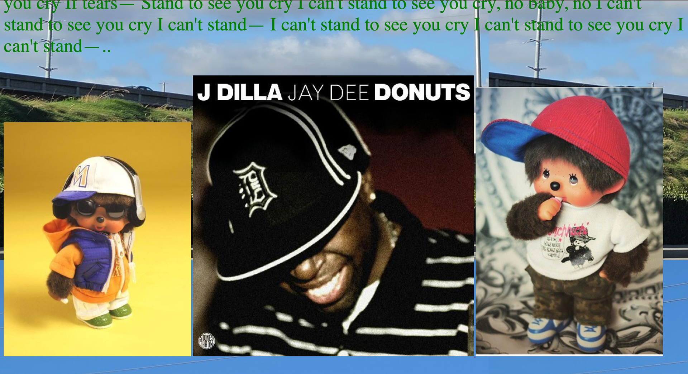
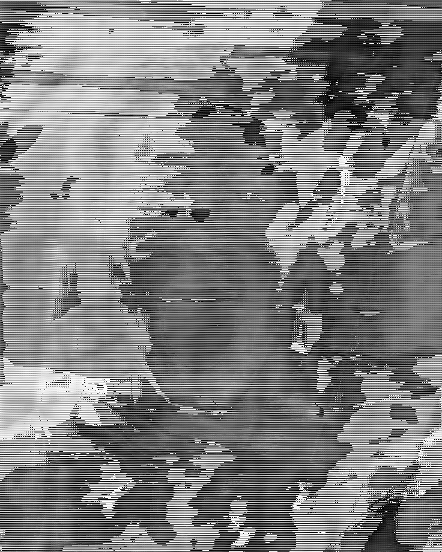

"Academic Weapon," 2026. Academic Weapon is a meme mashup of Kali Uchis, which is an iconic meme made popular by Gen Z. This mashup shows her in festival attire or also described as rave culture as she's doing work on Canvas. By using Adobe Photoshop, I was able to reuse this meme and change its context by adding popular rave accessories. To be able to appropriate and repurpose a meme is important as it goes beyond something seen as funny, but as a way to share new information.
"moretime," 2026. A time-based mashup that appropriates, Kelela - outta time (feat. A. K. Paul) (Official Video). This project is a bit more personal, as it gives you a piece of which genres and artists I often listen to. I've grown up being able to create my own video edits using mobile apps such as Videostar, Cute Cut, and Alight Motion. Through this project I was able to work with Premiere and Colab for the first time where I was able to experiment with not just editing, but working with frames through repetition and manipulation.
< Monchilla >

"Monchilla," 2026. A combination of two of my favorite things; producer J Dilla and the cutest monkey, Monchhichi. My first ever html webpages coded with the help of W3Schools. This was purely experimental as my pages weren't necessarily connected to one another. It's gotten me up to this point as I'm now able to code my own portfolio a bit easier after some repetition.

"Mute," 2026. Glitch art, but with intent. Originally the image I used was a photo of ex-Lakers player, #28 Rui Hachimura. The image was converted into raw data which then was put into Audacity where I tweaked its waveform and added random effects then lastly ran back into Photoshop for its final result. Before this project I never thought about how glitch art is a mix between manipulation and control.
"Curiosity Saved the Cat," 2026. An interactive and narrative based game about cats! This interactive webpage is very lighthearted and its purpose is to entertain everyone. The web was fully done through HTML coding hence the simplicity of its display. It's important to create work that allows the viewer to be able to interact with your work and make their own choices.
"Self Portrait," 2026. A piece created using the p5.js processing.